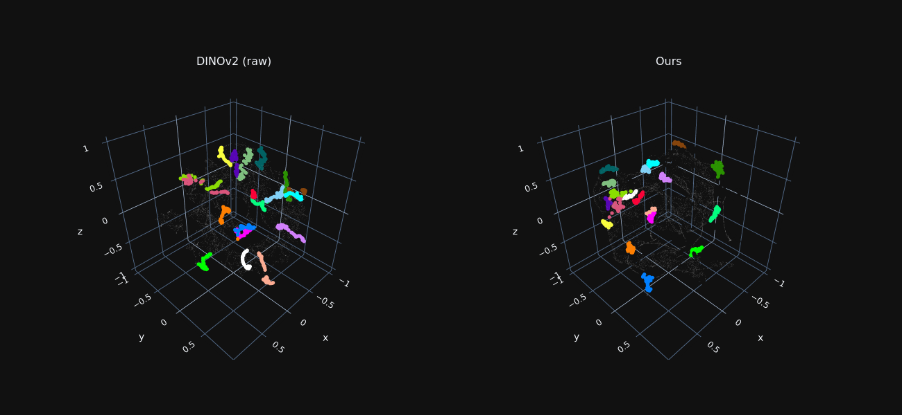
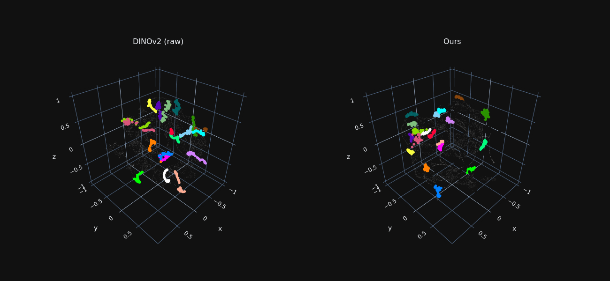
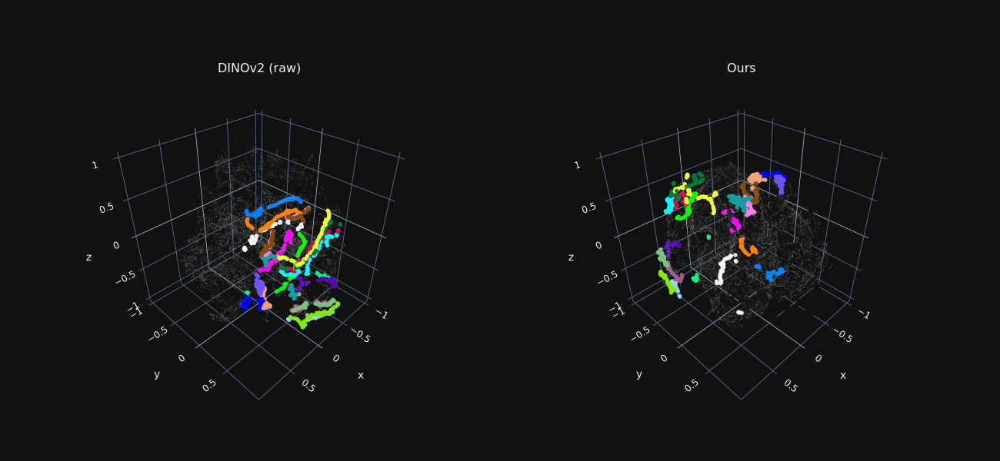
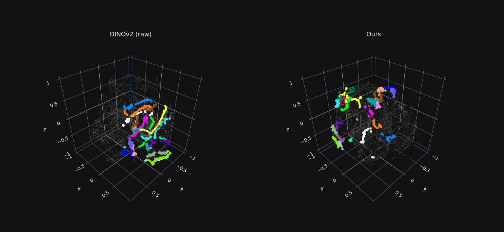

DINO-Tracker: Taming DINO for Self-Supervised Point Tracking in a Single Video
Supplementary Material
- Our Results
- TAP-Vid-DAVIS Comparisons
- BADJA Comparisons
- TAP-Vid-Kinetics Comparisons
- Trajectory Features Visualization
- Ablations
- Tracking During Occlusions
- Limitations
We recommend watching videos in full screen. Use left-right arrows to browse through the videos in each section.
Our Results
Motion trails produced by DINO-Tracker. Our method tracks the points accurately and smoothly in time, and is robust to long, repeated occlusions.
TAP-Vid-DAVIS Comparisons
Qualitative comparisons to Co-Tracker [1], Omnimotion [2] and TAPIR [3] on TAP-Vid-DAVIS-480 [5] (Figure 4 in the paper).
For methods that track behind occlusions, we use empty circles for points predicted as occluded.
Our method exhibits better association of tracks across occlusions and tracks more persistently than SOTA trackers.
By utilizing DINO's prior, our method tracks better on regions where optical flow is lacking, e.g. compared to Omnimotion.
BADJA Comparisons
Comparisons to Co-Tracker [1], Omnimotion [2] and TAPIR [3] on BADJA [6] (Figure 5 in the paper). Tracked points are color-coded, while errors w.r.t. ground-truth are shown in red lines. Only frames where ground-truth annotations are shown (every 3-5 frames). Our method tracks better across occlusions and self-occlusions. Despite our noticeable improvement, correctly tracking the limbs through self-occlusion remains challenging for all methods.
TAP-Vid-Kinetics Comparisons
We additionally compare to Co-Tracker [1], TAPIR [3] and PIPs++ [4] on TAP-Vid-Kinetics-480 [5], using same visualization as in BADJA. (Omnimotion weights are not available in Kinetics-480). Ground-truth visible points predicted as occluded are marked with empty circles, ground-truth occluded points predicted as visible are marked with cross.
Trajectory Features Visualization
We reduce the dimensionality of foreground features extracted from all frames to 3D using t-SNE, for both raw DINO features and our optimized ones.
Features sampled along ground-truth trajectories are marked in color, where each color indicates a different trajectory.
Our refined features exhibit tight “trajectory-clusters”, allowing our method to associate matching points across distant frames and occlusion.

 

 

Ablations
Comparison with two baselines: 1. raw DINOv2 [7] tracking, 2. LoRA [8] fine-tuning (Section 4.2 in the paper).
In each example, we show: color-coded query points and their corresponding tracks (top row),
and correlation maps for a single query point (marked in yellow; bottom row).
Raw DINOv2 and LoRA-tuned features are not well localized and are ambiguous in semantically similar regions (e.g. eyes of the fish).
On the other hand, our refinement approach using Delta-DINO CNN produces more localized heatmaps, resulting in smoother and more consistent tracks.
Tracking During Occlusions
While our method excels in associating points across long-term occlusions, we do not model trajectories behind occluders. However, due to DINO-Tracker's ability of tracking across occlusions, a simple interpolation technique can give plausible tracks during occlusions. Videos below demonstrate a proof-of-concept of such approach, where we use simple cubic spline to interpolate between visible tracks before and after occlusions (points predicted as occluded are marked in empty circles). Extending this approach to a more advanced technique is an intriguing future direction.
Limitations
We observed that in challenging videos for which there is almost no optical flow supervision and there are multiple semantically-similar objects, trajectories may jump from one object to another (points on the first deer jump to the second deer). This is because raw DINO is mostly dominated by semantic information.
References
[1] Nikita Karaev, Ignacio Rocco, Benjamin Graham, Natalia Neverova, Andrea Vedaldi, and Christian Rupprecht. CoTracker: It is Better to Track Together. arXiv, 2023.
[2] Qianqian Wang, Yen-Yu Chang, Ruojin Cai, Zhengqi Li, Bharath Hariharan, Aleksander Holynski, Noah Snavely. Tracking Everything Everywhere All at Once. ICCV, 2023.
[3] Carl Doersch, Yi Yang, Mel Vecerik, Dilara Gokay, Ankush Gupta, Yusuf Aytar, Joao Carreira, Andrew Zisserman. TAPIR: Tracking Any Point with per-frame Initialization and temporal Refinement. ICCV, 2023.
[4] Yang Zheng, Adam W. Harley, Bokui Shen, Gordon Wetzstein, Leonidas J. Guibas. PointOdyssey: A Large-Scale Synthetic Dataset for Long-Term Point Tracking. ICCV, 2023.
[5] Carl Doersch, Ankush Gupta, Larisa Markeeva, Adrià Recasens, Lucas Smaira, Yusuf Aytar, João Carreira, Andrew Zisserman, Yi Yang. TAP-Vid: A Benchmark for Tracking Any Point in a Video. NeurIPS, 2022.
[6] Benjamin Biggs, Thomas Roddick, Andrew Fitzgibbon, Roberto Cipolla. Creatures great and SMAL: Recovering the shape and motion of animals from video. ACCV, 2018.
[7] Maxime Oquab, Timothée Darcet, Théo Moutakanni, Huy Vo, Marc Szafraniec, Vasil Khalidov, Pierre Fernandez, Daniel Haziza, Francisco Massa, Alaaeldin El-Nouby, Mahmoud Assran, Nicolas Ballas, Wojciech Galuba, Russell Howes, Po-Yao Huang, Shang-Wen Li, Ishan Misra, Michael Rabbat, Vasu Sharma, Gabriel Synnaeve, Hu Xu, Hervé Jegou, Julien Mairal, Patrick Labatut, Armand Joulin, Piotr Bojanowski.
DINOv2: Learning Robust Visual Features without Supervision. arXiv, 2023.
[8] Edward J. Hu, Yelong Shen, Phillip Wallis, Zeyuan Allen-Zhu, Yuanzhi Li, Shean Wang, Lu Wang, Weizhu Chen. LoRA: Low-Rank Adaptation of Large Language Models. ICLR, 2022.